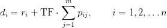
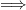
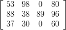
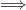

In diesem Beispiel soll eine gegebene Probleminstanz ohne die Benutzung der grafischen Oberfläche von LiSA gelöst werden. Dies erfolgt durch die Codierung der Probleminstanz in XML und dem anschließenden Aufruf eines Lösungsalgorithmus direkt über die Kommandozeile. Dieses Vorgehen kann dazu verwendet werden, um das Lösen und Optimieren gegebener Shop-Schedulingprobleme zu automatisieren.
Gegeben sei eine Probleminstanz vom Typ J∣∣∑ Ci mit 4 Maschinen und 3 Aufträgen. Weiterhin sind die Bearbeitungszeiten und die technologische Reihenfolge gegeben:
PT =  |
|
Für diese Probleminstanz soll mit Hilfe des Algorithmus Beam Search (→4.2.3) ein Zeitplan gefunden werden.
Ergänzen der fehlenden Angaben
Für die Übergabe an einen Lösungsalgorithmus müssen die Operationenmenge und die technologische
Reihenfolge in Matrixform angegeben werden. Aus der Matrix der Bearbeitungszeiten PT lässt
sich die folgende Operationenmenge ableiten:
SIJ = I × J\{(13), (33)}
Die Matrix MO ergibt sich wie folgt:
MO = 
Erzeugen des instance
-Dokumentes
Die Probleminstanz muss nun in ein XML-Dokument überführt werden, das dem
Lösungsalgorithmus übergeben werden kann. Wichtig ist auch die Angabe der Aufrufparameter für
den Lösungsalgorithmus, die – in einem <controls>-Element zusammengefasst – in dem
Dokument mit enthalten sind. Die einzelnen Parameter bestehen jeweils aus einem Namen, dem
Typ (string, integer oder real) und einem Wert. Welche Parameter ein Algorithmus genau
verlangt, lässt sich im Kapitel 4 nachschlagen.
Hinweis: Für das korrekte Einlesen der XML-Datei ist auch die Reihenfolge der XML-Elemente wichtig. Beispielsweise muss das <controls>-Element direkt nach dem <values>-Element folgen. Der allgemeine Aufbau eines instance-Dokumentes ist in Anhang A beschrieben.
Für die oben gegebenen Daten wird also das folgende instance-Dokument erstellt:
Aufruf des Algorithmus unter Windows
Es wird angenommen, dass die eben erstellte XML-Datei unter dem Namen beispiel.xml im
Ordner C:\Scheduling\ liegt. Der aufzurufende Algorithmus (in diesem Fall beam.exe) liegt im
Unterordner bin des LiSA-Verzeichnisses (standardmäßig C:\Programme\LiSA\bin). Mit Hilfe der
Windows- Eingabeaufforderung (cmd) muss in diesen Ordner gewechselt werden, um von hier aus
den Algorithmus aufzurufen (der Aufruf von einem anderen Arbeitsverzeichnis aus ist leider nicht
möglich).
Dieser Aufruf erzeugt im Ordner C:\Scheduling\ die Datei beispiel.out.xml, welche ein Dokument vom Typ solution ist. In ihr ist die Ausgabe des Algorithmus und damit der gesuchte Zeitplan enthalten.
Aufruf des Algorithmus unter UNIX und cygwin
Hierbei wird angenommen, dass die erstellte XML-Datei im Home-Verzeichnis unter dem Namen
beispiel.xml gespeichert wurde. Der aufzurufende Algorithmus (in diesem Fall beam) liegt im
Unterordner bin des LiSA-Verzeichnisses (standardmäßig ~/LiSA/bin). Mit Hilfe einer Konsole
kann das Programm in diesem Arbeitsverzeichnis aufgerufen werden (ein Aufruf aus einem anderen
Verzeichnis ist leider nicht möglich).
Dieser Aufruf erzeugt im Home-Verzeichnis die Datei beispiel.out.xml, welche ein Dokument vom Typ solution ist. In ihr ist die Ausgabe des Algorithmus und damit der gesuchte Zeitplan enthalten.